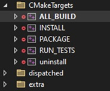

Подготовка к работе
Установка и настройка зависимостей
Для работы с библиотекой используется версия OpenCV 4.10 с CUDA 12.4, которая должна быть предварительно собрана и установлена на исполняемой платформе с операционными системами Windows или Linux. Для сборки должна быть использована версия CMake не ниже 3.14.
Для операционной системы Windows
Необходимо выполнить следующий ряд действий:
Установить необходимые компоненты:
CMake GUI 3.30.0-rc4
Git Bash
Visual Studio 2022 Community Edition
yaml-cpp:
cd C:\ git clone https://github.com/jbeder/yaml-cpp.git cd yaml-cpp mkdir build cd build cmake .. -DYAML_CPP_BUILD_TESTS=OFF -DYAML_CPP_INSTALL=ON cmake --build . --config Release cmake --install . --prefix "C:\yaml-cpp"
LibTorch 2.4.0 с поддержкой CUDA 12.4 (доступна по ссылке: https://download.pytorch.org/libtorch/cu124/libtorch-win-shared-with-deps-2.4.0%2Bcu124.zip) или без поддержки CUDA (https://download.pytorch.org/libtorch/cpu/libtorch-win-shared-with-deps-2.4.0%2Bcpu.zip)
CUDA Toolkit 12.4 (https://developer.nvidia.com/cuda-12-4-0-download-archive)
cuDNN 9.3.0 (https://developer.nvidia.com/cudnn-9-3-0-download-archive?target_os=Windows&target_arch=x86_64) Скачать версию Tarball, распаковать архив с папками bin, include, lib и скопировать их в папку установки CUDA 12.4 По умолчанию:
C:\Program Files\NVIDIA GPU Computing Toolkit\CUDA\v12.4.nvToolsExt (NVTX)
Клонировать репозитории с версией OpenCV 4.10:
git clone https://github.com/opencv/opencv.git -b "4.10.0" git clone https://github.com/opencv/opencv_contrib.git -b "4.10.0"
Создать директорию для сборки библиотеки.
Запустить CMake-GUI.
Выбрать компилятор Visual Studio 17 2022.

В полях «where is the source code» и «where is the build binaries» указать пути к папке с исходниками OpenCV и созданной папке build. Например, папка
installсодержит собранные материалы библиотеки.
Нажать Configure.
После успешного конфигурирования найти и выставить параметры:
CMAKE_INSTALL_PREFIX->D:/ваш путь к собранной библиотеке/cvcudaEXECUTABLE_OUTPUT_PATH->D:/ваш путь к собранной библиотеке/cvcuda/binOPENCV_EXTRA_MODULES_PATH->D:/ваш путь к собранной библиотеке/opencv_contrib/modulesОтметить галочкой
WITH_CUDA
Примечание: Если переменные отсутствуют, включите пункт Advanced.
Нажать Configure повторно и выставить дополнительные параметры:
Отметить
CUDA_FAST_MATH,OPENCV_DNN_CUDA,ENABLE_FAST_MATH,WITH_OPENGLСнять галочки с
WITH_NVCUVENC,WITH_NVCUVID,WITH_VTKУказать архитектуру видеокарты в
CUDA_ARCH_BINЕсли cuDNN установлен в нестандартном месте, указать пути:
CUDNN_LIBRARY-> путь к файлуcudnn.libCUDNN_INCLUDE_DIR-> путь к папкеincludecuDNN
Нажать Generate.
После генерации нажать Open Project для открытия Visual Studio.
В обозревателе решений Visual Studio в папке CMakeTargets нажать правой кнопкой на ALL_BUILD и выбрать «Собрать».
После успешной сборки выполнить сборку конфигурации «INSTALL».
Для операционной системы Linux (Ubuntu) без поддержки CUDA
Установить зависимости с помощью набора команд
sudo apt update sudo apt install build-essential cmake git libgtk2.0-dev pkg-config libavcodec-dev libavformat-dev libswscale-dev sudo apt install libtbb2 libtbb-dev libjpeg-dev libpng-dev libtiff-dev
Установить библиотеку yaml-cpp
git clone https://github.com/jbeder/yaml-cpp.git cd yaml-cpp cmake . make sudo make install
Установить библиотеку LibTorch
Перейти по ссылке https://pytorch.org/get-started/locally/ и скачать необходимую версию.

На момент создания инструкции актуальна ссылка https://download.pytorch.org/libtorch/cpu/libtorch-cxx11-abi-shared-with-deps-2.7.1%2Bcpu.zip
При необходимости установить unzip и wget с помощью набора команд
sudo apt install unzip
sudo apt install wget
Распаковать архив libtorch с помощью команды
sudo unzip /path/to/libtorch-library.zip -d /opt/
Добавить путь к libtorch в динамический компоновщик с помощью команды
sudo sh -c "echo '/opt/libtorch/lib' >> /etc/ld.so.conf.d/libtorch.conf"
sudo ldconfig
Добавить пути к заголовочным файлам и библиотекам в файл ~/.bashrc для этого: 1. Открыть файл с помощью команды
sudo nano ~/.bashrc
Добавить текст в конец файла
export TORCH_INCLUDE=/opt/libtorch/include
export TORCH_LIB=/opt/libtorch/lib
export LD_LIBRARY_PATH=$LD_LIBRARY_PATH:$TORCH_LIB
export CPATH=$CPATH:$TORCH_INCLUDE
export Torch_DIR=/opt/libtorch/share/cmake/Torch
Сохранить (Ctrl + O, Ctrl + X) и активировать изменения
source ~/.bashrc
Убедиться в правильности установки можно используя инструкцию https://docs.pytorch.org/cppdocs/installing.html
Установка OpenCV
Перейти в домашнюю папку и выполнить команды
git clone https://github.com/opencv/opencv.git -b "4.10.0"
git clone https://github.com/opencv/opencv_contrib.git -b "4.10.0"
mkdir -p opencv/build && cd opencv/build
Сборка проекта осуществляется в папке build. При возникновении ошибок необходимо очистить папки build и .cache Далее, установить значения параметров сборки и запустить сборку, после завершения установить библиотеку:
cmake -D CMAKE_BUILD_TYPE=Release \
-D CMAKE_INSTALL_PREFIX=/usr/local \
-D OPENCV_EXTRA_MODULES_PATH=../../opencv_contrib/modules \
..
make -j$(nproc)
sudo make install
Установка библиотеки mrcv
Клонировать исходный код библиотеки с помощью команды:
git clone https://github.com/valabsoft/code-ai-400393.git
Отключить флаг сборки с поддержкой CUDA. Для этого в корневом CMakeLists.txt установить значение соответствующего флага:
option(USE_CUDA "Use CUDA Build" OFF)
Выполнить набор команд
cd code-ai-400393
mkdir build
сd build
cmake ..
make
sudo make install
sudo ldconfig -v
Библиотека установлена, для проверки можно воспользоваться примерами из папки build/examples.
Запуск примеров
Запуск демонстрационного примера augmentation (остальные примеры запускаются по аналогии)
Перейти в папку build/examples любым удобным способом
Выбрать папку примера
cd augmentation
Скопировать папку files из examples/augmentation в build/examples/augmentation
Запустить исполняемый файл
./mrcv-augmentation
Для операционной системы Linux (Ubuntu)
Установить зависимости:
sudo apt update sudo apt install build-essential cmake git libgtk2.0-dev pkg-config libavcodec-dev libavformat-dev libswscale-dev sudo apt install libtbb2 libtbb-dev libjpeg-dev libpng-dev libtiff-dev libdc1394-22-dev
Установить yaml-cpp:
git clone https://github.com/jbeder/yaml-cpp.git cd yaml-cpp cmake . make sudo make install
Установить LibTorch 2.4.0 с поддержкой CUDA 12.4 или без поддержки CUDA:
Распаковать архив libtorch:
unzip /path/to/libtorch-library.zip -d /opt/Добавить путь к libtorch в динамический компоновщик:
sudo sh -c "echo '/opt/libtorch/lib' >> /etc/ld.so.conf.d/libtorch.conf" sudo ldconfig
Добавить пути к заголовочным файлам и библиотекам в файл
~/.bashrc:export TORCH_INCLUDE=/opt/libtorch/include export TORCH_LIB=/opt/libtorch/lib export LD_LIBRARY_PATH=$LD_LIBRARY_PATH:$TORCH_LIB export CPATH=$CPATH:$TORCH_INCLUDE export Torch_DIR=/opt/libtorch/share/cmake/Torch
Установить CUDA Toolkit 12.4 и cuDNN 9.3:
wget https://developer.download.nvidia.com/compute/cudnn/9.3.0/local_installers/cudnn-local-repo-cross-aarch64-ubuntu2204-9.3.0_1.0-1_all.deb sudo dpkg -i cudnn-local-repo-cross-aarch64-ubuntu2204-9.3.0_1.0-1_all.deb sudo cp /var/cudnn-local-repo-cross-aarch64-ubuntu2204-9.3.0/cudnn-*-keyring.gpg /usr/share/keyrings/ sudo apt-get update sudo apt-get -y install cudnn-cross-aarch64
Клонировать исходники OpenCV:
git clone https://github.com/opencv/opencv.git -b "4.10.0" git clone https://github.com/opencv/opencv_contrib.git -b "4.10.0" mkdir -p opencv/build && cd opencv/build
Выполнить сборку и установку с CUDA:
cmake -D CMAKE_BUILD_TYPE=Release \ -D CMAKE_INSTALL_PREFIX=/usr/local \ -D OPENCV_EXTRA_MODULES_PATH=../../opencv_contrib/modules \ -D WITH_CUDA=ON \ -D OPENCV_DNN_CUDA=ON \ -D CUDA_ARCH_BIN=7.5 \ -D CUDA_ARCH_PTX= \ .. make -j$(nproc) sudo make install
Установка и первоначальная настройка библиотеки
Клонировать проект:
git clone https://github.com/valabsoft/code-ai-400393.git cd code-ai-400393/mrcv
Установить библиотеки (пример для Windows):
C:\ ├───libtorch-12.4 ├───libtorch-12.4-cuda ├───opencv-4.10.0-build ├───opencv-4.10.0-build-cuda └───yaml-cpp
Добавить в переменные окружения системные пути:
Для Windows:
C:\opencv-4.10.0-build\install\x64\vc17\bin\ C:\opencv-4.10.0-build-cuda\install\x64\vc17\bin\
Для Linux:
/usr/local/include/opencv4/ /usr/local/lib
Настроить сборку, указав путь к установленным библиотекам и включить необходимые флаги в CMakeLists.txt.
Подготовка данных для тестирования
Подготовить входные изображения и видео для тестирования алгоритмов.
Организовать структуру папок для удобства:
├── data │ ├── images │ └── videos
Проверить доступность и корректность данных.
Настроить параметры конфигурации тестов, если это необходимо.